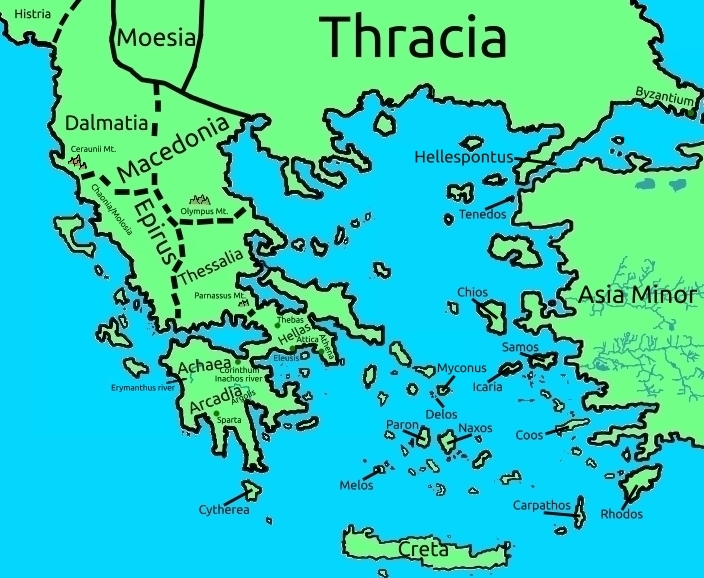

Graecia
Greece is called so from king Graecus, who ruled the entirety of Greece. Another name for the whole of Greece is Illyricus.
It has seven areas: The first, from the west, is Dalmatia; Then Epirus and Hellas - home to Attica; Then Achaea and Arcadia in the Pelopponese peninsula, connected to mainland Greece through the narrow isthmus of Corinth - an isthumus is simply a narrow strip of land with water on both sides, linking two larger landmasses - and finally the island of Crete and the smaller Cyclades islands at sea.
Thus, seven provinces in total.